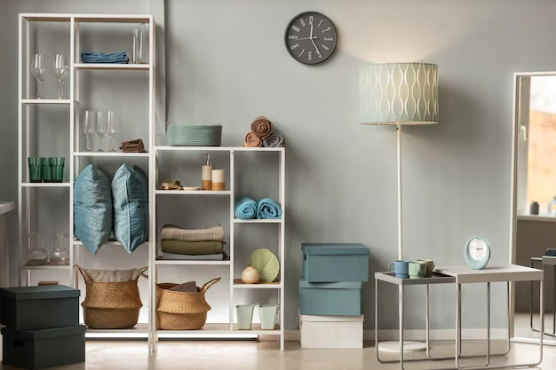
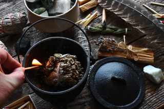
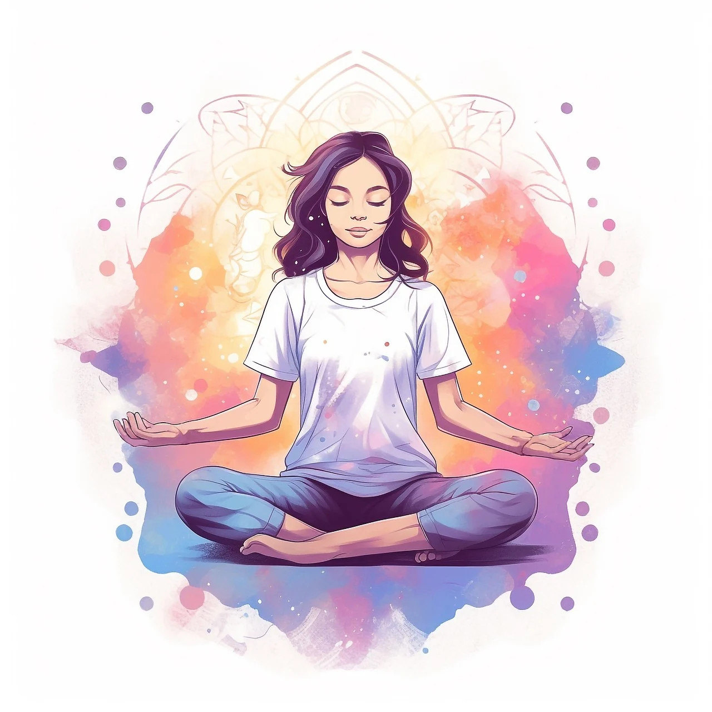

Bienvenue chez "OM Sweet Home" !
Un espace entièrement dédié au bien-être de l'humain & de son habitat pour vivre mieux au quotidien !
EN QUOI PUIS-JE VOUS AIDER ?
En recherche du bien-être sous toutes ses formes – corps, esprit, habitat – et très tournée vers les autres, j’ai choisi d’en faire mon métier ! Sensible à l’art subtil du Feng Shui, passionée par le rangement et l'organisation des espaces de vie, j’aide les personnes à aligner leur être profond avec leur lieu de vie, pour favoriser vitalité, équilibre et bien-être.
Mon objectif : vous aider à simplifier et améliorer votre existence !
Faîtes l'expérience de la "home organisation" et du "Feng Shui traditionnel", et observez leur impact sur votre vie ! Cultivez l’harmonie et la simplicité, et revenez à l'essentiel ! Tout simplement.
Mes prestations

1/ SEANCE de HOME ORGANISING
Trier - vider - désencombrer - organiser son lieu de vie.Vous ressentez des blocages émotionnels ? Vous vous sentez lourd au quotidien ? Vous remettez tout au lendemain ? Vos projets font du sur place ? Et si ça venait, tout simplement, de l'encombrement de votre maison ? A notre insu, le confort matériel laisse peu à peu la place à l'encombrement cérébral. L'accumulation de choses et d'objets inutiles gaspille notre énergie et épuise notre mental. La vie pressée et active contemporaine nous submerge et on se noie facilement dans le désordre ... La solution ? se faire aider pour désencombrer sa maison !
Le Home Organising, qu'est-ce-que c'est ?
Le Home Organising, c'est l'art de trier, de désencombrer et d'organiser sa maison, sa chambre, sa cuisine, ses placards, son garage ... Désencombrer, ce n'est pas déplacer les objets. Désencombrer, c'est trier, jeter, donner, recycler, se débarrasser ... C'est une méthode issu du minimalisme japonnais, c'est faire le vide et revenir à l'essentiel.
Alors ... une place pour chaque chose, et chaque chose à sa place !
C'est la première étape clé pour alléger et embellir l'existence ! Vivre avec l'essentiel, c'est vivre au présent et faire confiance au lendemain. Se délester du passé, c'est s'ouvrir à la nouveauté. Ainsi, désencombrer sa maison est l'art subtil d'un feng shui fondamental pour un retour à la légèreté et au bien-être. C'est l'étape nécessaire pour la remise en circulation du Qi dans votre habitat, pour retrouver équilibre et hamonie. Et je peux vous aider.
Dans quels cas m'appeler ?
- un déménagement à organiser
- la perte d'un cher et une maison à vider / trier
- la famille qui s'est vite agrandie ! (et on perd pieds .. !)
- une perte de capacité physique
- une perte de repères et un débordement matériel
- une addiction à la consommation matérielle
- juste l'envie / besoin d'être accompagner / coacher par une professionnelle passionée !
Bénéfices du Home Organising & du désencombrement :
- alléger sa vie et son esprit !
- réduire sa charge mentale
- retrouver de la place chez soi
- réorganiser sa vie, faciliter ses mouvements au sein de son habitat, accéder plus facilement à ses objets
- simplifier, alléger, embellir son existence (revenir à l'essentiel)
- faire moins le ménage, et moins la poussière !
- libérer le Chi (l'énergie) !
- prendre plaisir à (re)décorer sa maison et à la contempler
- être bien chez soi, tout simplement
Tarifs 1er RDV / diagnostic : 65€ (environ 2h).
Tarifs d'accompagnement : 1/2 journée : 80€ - 1 journée : 150€ - 2 journées : 280€ - 3 journées : 360€.
Des frais de déplacement sont à prévoir.

2/ SEANCE de PURIFICATION
Nettoyer - Purifier - Assainir - Augmenter le taux vibratoire de son habitat.Vous ressentez l'atmosphère de votre intérieur comme lourd et gênant ? Vous venez d'emménager et souhaiter purifier l'énergie en présence ? Vous allez déménager et souhaiter assainir votre passé pour vous ouvrir sereinement à l'avenir ? Vous souhaitez neutraliser et évacuer la mauvaise énergie des conflits familiaux vécus par le passé ? Alors essayez une séance de purification de l'espace, c'est très efficace !
La pratique de la purification des espaces est fondamentale pour l'élimination des énergies stagnantes d'un lieu et des énergies négatives. Elle peut aussi inciter cetaines entités en présence à partir du lieu, alors jusque là "coincées", "accrochées", dans un coin d'une pièce par exemple. La purification permet aussi la remise en libre circulation du Qi, qui se recharge en positif, et l'augmentation du taux vibratoire de votre lieu de vie. Un espace assaini, c'est une vie plus légère et plus claire, ouverte aux changements et aux nouveaux projets. La purification augmente aussi le taux vibatoire des personnes.
Déroulement d'une séance :
La durée d'une séance dépend de la taille de votre habitat. En général, elle varie de 1 à 3 heures. Elle comprend :
- 1er contact téléphonique et étude de votre besoin
- Déplacement sur place
- Phase de connaissance avec le lieu et 1er "tour" du lieu
- 1er tour de purification avec le bol chantant tibétain
- 2ème tour avec l'encens ou la sauge amérindienne
- 3ème tour avec le koshi (carillon) ou les clappements de mains
On voit ensuite ensemble si des remèdes comme le gros sel ou la fumigation au benjoin sont nécessaires. Et pour une étude plus approfondie des énergies annuelles favorables et défavorables en présence, l'analyse en Feng Shui traditionnelle est recommandée.
Tarifs : séance de 1 à 3 heures en fonction de la surface de votre habitat.
1 heure : 50€ - 2 heures : 90€ - 3 heures : 120€.
Des frais de déplacement sont à prévoir.
3/ ANALYSE en FENG SHUI TRADITIONNEL
Aménager - Agencer - Canaliser et Activer les énergies favorables de son habitat.Votre vie stagne ? Vos projets n'aboutissent pas ? Vos relations sont sociales et familiales sont maussades ? Votre santé est faible ? Vous recontrez de nombreux petits tracas au quotidien ? Ou subissez une grande malchance permanente ? Vous manquez d'opportunités professionnelles ? Vous avez des problèmes avec la justice ? Alors, le Feng Shui peut vous aider. Issu des arts millénaires taoïstes, une séance de Feng Shui traditionnel peut véritablement améliorer votre vie
Art subtil de déblocage des énergies, cette science qu'utilisaient déjà les anciens empereurs chinois participe à la prospérité et à l'essor des humains en canalisant les mauvaises énergies et en activant les bonnes. (Le Feng Shui traditionnel, art ou science ?)
Bénéfices du Feng Shui traditionnel :
- soutien la santé et la guérison
- améliore le sommeil
- stimule la vitalité et la longévité
- harmonise les relations : sociales, familiales, amoureuses
- soutien la réussite scolaire et professionnelle
- stimule la richesse et la prospérité
- stimule la chance et l'abondance
- apporte légèreté, joie de vivre, positivité
- accroît la sérénité et la clarté d'esprit
- atténue les blocages émotionnels
- améliore le taux vibratoire des lieux, des choses, et des personnes
- 1er contact téléphonique et écoute de votre besoin
- 1er RDV et déplacement à votre domicile (rencontre, visite du bien, écoute de vos problématiques, prises de mesures et remise du plan de votre maison ou de votre appartement par vos soins, observation de l'environnement extérieurs, repérage des formes)
- Etude et analyse à mon domicile et rédaction de votre rapport (environ 3 à 6 semaines) : analyse de l'espace intérieur, selon les formules traditionnelles du BA ZHAI (8 Palais) et du XUAN KONG FEI XING (Etoiles Volantes), étude des formes, des afflictions temporelles, et de l'aspect énergétique (encombrement, pureté, fluidité) + analyse de l'espace extérieur (extension des 8 Palais). Recherche du Ming Tang et des protections célestes, placements extérieurs. Recommandations en agencement et aménagement. Remèdes. Recherche du placement de l'eau.
- 2nd RDV à votre domicile : remise de votre rapport, explications des recommandations, conseils, accompagenement pour l'aménagement proposé
- Période d'assistance téléphonique de 6 mois, avec possibilité d'un 3ème déplacement pour vous accompagner dans vos ajustements
Qui suis-je ?
Se présenter est toujours un exercice difficile… alors je préfère parler de mon parcours !
Depuis l’enfance, j’ai cherché l’équilibre, la joie et la légèreté. J’organisais, rangeais, donnais ce que je n’utilisais plus, réaménageais l’espace autour de moi. Puis, en grandissant, j’ai exploré le monde, enchaînant voyages et expériences de vie personnelles et professionnelles. Ainsi, depuis près de 25 ans, ma quête s’est concentrée sur l’énergie: celle qui nous anime, celle des autres, celle des lieux. Comprendre, expérimenter, et partager sont devenus mon moteur.
Ma recherche repose sur 3 piliers fondamentaux : l'harmonie du corps et de l'esprit, le bien-être dans son habitat et le travail de l'energie qui nous anime.
Le bien-être intérieur par le Yoga
C’est en 2003 à Grenoble que j’ai débuté dans le hatha yoga, un moment vécu comme une véritable renaissance, et qui marqua le point de départ de mon exploration énergétique et spirituelle. La pratique des postures en pleine conscience et de la méditation m’a ouvert les portes du bien-être et de la paix intérieure.
Ayant eu la chance de pratiquer dans plusieurs pays et de tester plusieurs styles, c’est à l’Ashram international de hatha yoga Sivananda que j’ai suivi la formation de professeurs (TTC), en 2016.

Grâce à mes 20 ans de pratique et à cette formation, j’ai développé une connaissance solide des techniques pour équilibrer mon corps & mon esprit, et pour le partager à mon entourage.
L’harmonie de l’habitat grâce au Feng Shui

Ma rencontre avec le Feng Shui et l’harmonisation de l’habitat eu lieu plus tard, en 2007. C'est notamment à la lecture de 2 auteurs, telles que Dominique Loreau et Karen Kingston, que j'ai basculé dans cet univers passionnant. Leur regard respectif sur le Feng Shui moderne, appliqué à l'harmonisation des espaces, et à l'art de la simplicité, m'a complètement séduite.
Depuis le Feng Shui me suit partout : chez moi, chez mes amis, lors d'un voyage. C'est surtout en Asie et sur l'île de Bali en Indonésie que j’ai observé le respect des habitants envers leur lieu de vie et leur façon de soigner leur intérieur. J'ai compris l'importance de notre relation avec notre "home sweet home". J'ai compris aussi que la simplicité matérielle et la légèreté de l'être, sont source de bien-être et d'un certain bonheur.
Progressivement, mon besoin d’approfondir le sujet m’a menée au Feng Shui traditionnel. En 2019, j’ai suivi une première formation auprès de l’Institut Suisse de Feng Shui, puis, en 2020, j'ai décidé de me former directement à la "source", à la prestigieuse Yap Cheng Hai Academy.
Depuis je me suis également tout récemment formée en "Home Organising", auprès d'Elodie Wery. En effet il existe des vraies méthodes pour organiser et ranger sa maison, et je m'assume enfin comme une perfectionniste du tri et du rangement, sans doute piquée à l'art subtil du minimalisme japonnais !
Le travail de l’énergie avec l’Aïkido

En parallèle, c’est en 2009 à Nouméa que j’ai rencontré l’Aïkido. L’aïkido est un art martial pacifiste, sans compétition, qui signifie « Voie de l’Harmonie ». Encore, je suis tombée en amour avec la pratique. Alliant discipline, non-violence et recherche de l’harmonie avec son partenaire, l’aïkido permet de développer progressivement le contrôle de l'énergie, des émotions, et du mental. Après 15 ans de pratique, j’ai eu l’honneur de sanctionner mon parcours d’Aïkidoka par l’obtention du Shodan (ceinture noire) en juin 2024. À travers l’aïkido, j’apprends à canaliser le Qi, ce qui est en lien direct avec mes autres pratiques énergétiques.